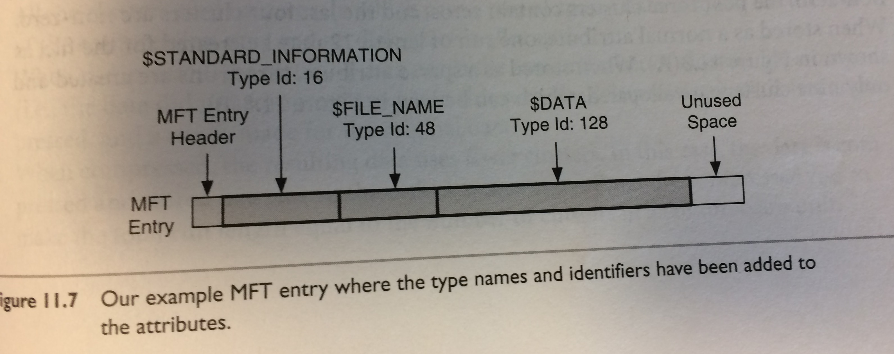
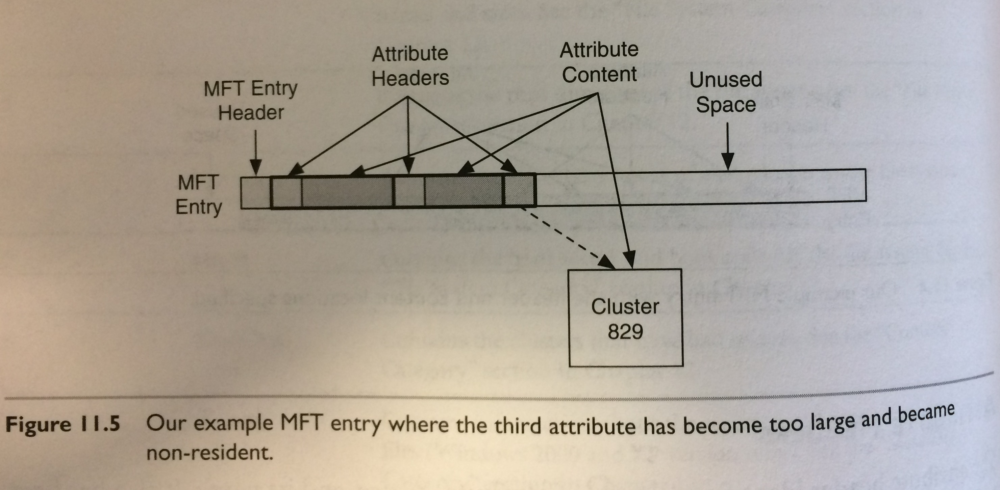
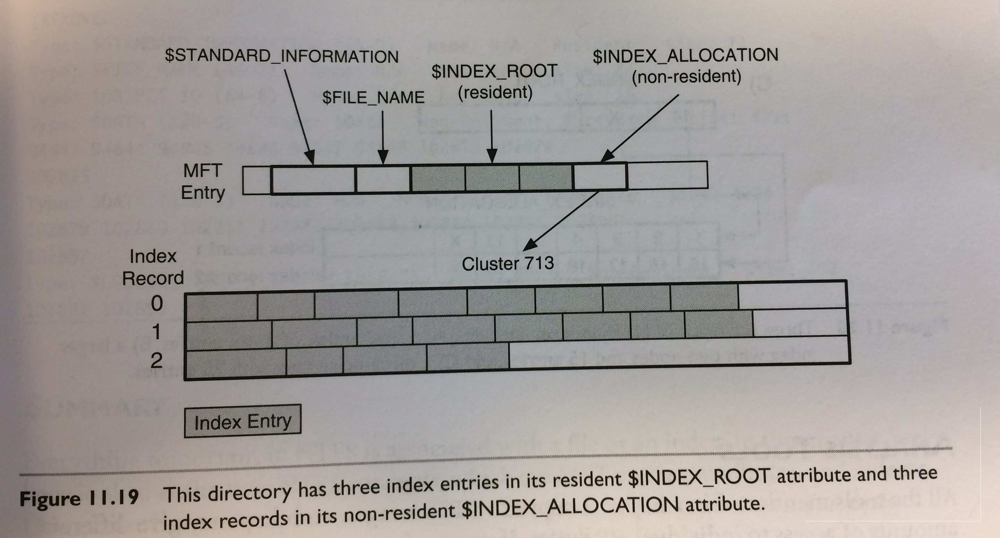

<!doctype html>
<html lang="en">
    <head>
        <meta charset="utf-8">
        <title>reveal-md</title>
        <link rel="stylesheet" href="css/reveal.css">
        <link rel="stylesheet" href="css/theme/league.css" id="theme">
        <!-- For syntax highlighting -->
        <link rel="stylesheet" href="lib/css/zenburn.css">

        <!-- If the query includes 'print-pdf', use the PDF print sheet -->
        <script>
          document.write( '<link rel="stylesheet" href="css/print/' + ( window.location.search.match( /print-pdf/gi ) ? 'pdf' : 'paper' ) + '.css" type="text/css" media="print">' );
        </script>
    </head>
    <body>

        <div class="reveal">
            <div class="slides"><section  data-markdown><script type="text/template"># Born-Digital Records  in Practice at UAlbany

Gregory Wiedeman<br/>
University Archivist
</script></section><section  data-markdown><script type="text/template">
## Some Background

M.E. Grenander Special Collections & Archives<br/>
University at Albany, SUNY
* 4 permanent archivists, 1 on grant funding
	* Department Head
	* Supervisory Archivist (Manuscripts and Front Desk)
	* Curator of Digital Collections
	* University Archivist
* 3-4 Graduate students
* Undergraduate work study students
</script></section><section  data-markdown><script type="text/template">
## Overview of University Archives

* University Records
	* Office of the President
	* University Senate
	* University Council
	* Office of the Provost
	* Graduate & Undergraduate Education
		* Records of Schools and Colleges
		* Records of Academic Departments
	* Web Archives
* Student Groups and Manuscripts
	* Student Association
	* Albany Student Press
	* Faculty and Alumni Papers
</script></section><section  data-markdown><script type="text/template">
## Collecting Background

* Formal records management program until cut in 1990s
	* Very effective collecting in 1970s
* Records Management "distributed" among offices
* Permanent Records <i>should</i> come to me
* Large paper backlog
* Establishment of extensible processing practices

</script></section><section  data-markdown><script type="text/template">
### What does this have to do with Born-Digital Records

* Concensus that Disk Imaging is most effective way to preserve born-digital records
* This poses real problems for public records
</script></section><section  data-markdown><script type="text/template">
### A Bit about File Systems

<div style="width: 65%; float: left">
<ul>
<li>File Allocation Table (FAT)</li>
<li>New Technology File System (NTFS)</li>
<li>HFS Plus</li>
<li>ext4</li>
<li>exFAT</li>
</ul>
</div>


</script></section><section  data-markdown><script type="text/template">
### How File Systems Work


<ul style="float: right; width: 60%">
<li>Not designed for preservation</li>
<li>Designed for efficiency</li>
<li>Quick Retrieval</li>
</ul>
</script></section><section  data-markdown><script type="text/template">
## Inefficient Storage

<!-- .slide: data-background="img/istorage2.JPG" -->
</script></section><section  data-markdown><script type="text/template">
## Efficient Storage

<!-- .slide: data-background="img/estorage.JPG" -->
</script></section><section  data-markdown><script type="text/template">
## File Systems are designed for Efficiency

* Files are abstractions
* Pointers to where data is stored
* Unix systems use Inode pointers
* NTFS uses $MFT (Master File Table)

[https://www.bloomberg.com/graphics/2015-paul-ford-what-is-code/](https://www.bloomberg.com/graphics/2015-paul-ford-what-is-code/)
</script></section><section  data-markdown><script type="text/template">
### Where is a File?


</script></section><section  data-markdown><script type="text/template">
<!-- .slide: data-background="img/istorage2.JPG" -->
</script></section><section  data-markdown><script type="text/template">
## Where do Files Live?


</script></section><section  data-markdown><script type="text/template">
## Where do Files Live?


</script></section><section  data-markdown><script type="text/template">
## NTFS on Windows



Brian Carrier, <i>File System Forensic Analysis</i> (Addison-Wesley, 2005), p. 283
</script></section><section  data-markdown><script type="text/template">
## $MFT (Master File Table)



Carrier, p. 280
</script></section><section  data-markdown><script type="text/template">
## $MFT (Master File Table)



Carrier, p. 295
</script></section><section  data-markdown><script type="text/template">
## $MFT Timestamps Demo

</script></section><section  data-markdown><script type="text/template">
## Deleting Files


</script></section><section  data-markdown><script type="text/template">
## Efficiency in Sectors


</script></section><section  data-markdown><script type="text/template">
## Efficiency in Sectors


Carrier, p. 188
</script></section><section  data-markdown><script type="text/template">
## Slack Space


Carrier, p. 188
</script></section><section  data-markdown><script type="text/template">
## Imaging the Disk


<div style="float:left;width:30%;font-size:100pt;"> --> </div>


</script></section><section  data-markdown><script type="text/template">
## Disk Images

<ul style="float: left; width: 45%">
<li>.dd</li>
<li>.EWF</li>
<li>.AFF</li>
<li>.ISO</li>
</ul>

<ul style="float: right; width: 45%">
<li>Unix disk dump utility</li>
<li>FTK Imager</li>
<li>Guymanger</li>
<li>ImgBurn</li>
</ul>

</script></section><section  data-markdown><script type="text/template">
#### [Ben Goldman, "Outfitting a Born-Digital Archives Program"<br/><i>Practical Technology for Archives</i>&nbsp;&nbsp; Issue 2 (June 2014)](http://https://practicaltechnologyforarchives.org/issue2_goldman/)


<!-- .slide: data-background="img/diskImaging.jpg" -->

</script></section><section  data-markdown><script type="text/template">
## What Can We Learn from a Disk Image?

* File metadata
	* Timestamps
	* Logs and Journals
	* Registries
* Deleted Files not overwritten
* Data in Slack Space
* Corrupted Data
</script></section><section  data-markdown><script type="text/template">
## So, What does all this mean?

* Disk imaging keeps all the bits
	* More than what you can see on your computer
* Great for manuscripts
	* David Baldus Papers
	* Maurice Hinchey Papers

</script></section><section  data-markdown><script type="text/template">
## Overview of University Archives

* University Records
	* Office of the President
	* University Senate
	* University Council
	* Office of the Provost
	* Graduate & Undergraduate Education
		* Records of Schools and Colleges
		* Records of Academic Departments
	* Web Archives
* Student Groups and Manuscripts
	* Student Association
	* Albany Student Press
	* Faculty and Alumni Papers
</script></section><section  data-markdown><script type="text/template">
## Records Created by the University are Public Records

* [Academic Affairs (Provost)](http://system.suny.edu/media/suny/content-assets/documents/compliance/info-management/records/Academic-Affairs-Schedule.pdf)
* [Office of the President](http://system.suny.edu/media/suny/content-assets/documents/compliance/info-management/records/Executive-Records.pdf)

University Records are subject to FOIL <!-- .element: class="fragment" data-fragment-index="1" -->
</script></section><section  data-markdown><script type="text/template">
## Born-Digital Records Collecting in Practice

* Files dispersed around the University
	* Local Computers
	* Network Shares
	* Cloud Storage
</script></section><section  data-markdown><script type="text/template">
<!-- .slide: data-background="https://s3.amazonaws.com/media-p.slid.es/imports/471978/4uLaRRIF/4uLaRRIF_002.png" -->
</script></section><section  data-markdown><script type="text/template">
## ANTS issues

* Difficulty to get records creators to commit
	* Training
	* Required wider commitment
* Availability of network shares
* Maintenance
	* Library and packaging issues
* Really an authentication issue

</script></section><section  data-markdown><script type="text/template">
<!-- .slide: data-background="img/transferShares.png" -->
</script></section><section  data-markdown><script type="text/template">
## Transfer Scripts

* Network Folder Share
	* Archives and creator has access
* Python script run on task scheduler
* Weekly checks for new files
* CSV log files of files transferred
* Creates XML accession metadata file
* Runs createSIP.py command line tool
</script></section><section  data-markdown><script type="text/template">
## createSIP.py demo
</script></section><section  data-markdown><script type="text/template">
<!-- .slide: data-background="img/oais.png" -->
</script></section><section  data-markdown><script type="text/template">
## What is a SIP?

* Different interpretations of SIP, AIP, DIP
</script></section><section  data-markdown><script type="text/template">
## Into ArchivesSpace

* asInventory tool
* [ASpace Example](http://169.226.92.25:8080/resources/387#tree::archival_object_134438)
* [XTF Access System Example](http://meg.library.albany.edu:8080/archive/view?docId=ua100.xml#a61dcbbb42fbd4c6fc8133d7d1bab871)
* SIP = bag?
* AIP = ArchivesSpace record?
* DIP = PDF on web server?
</script></section><section  data-markdown><script type="text/template">
## Born-Digital Photography

* [Processing University Photographs](http://www.gregwiedeman.com/presentations/slides/sipPics.html)
* [Results](http://meg.library.albany.edu:8080/archive/view?docId=ua395.xml)
</script></section><section  data-markdown><script type="text/template">
## Maintenance

* Scripts break over time
	* No more ad-hoc approaches
	* No more XML data stores
* Network of well-maintained interoperable tools
* ArchivesSpace Migration
</script></section><section  data-markdown><script type="text/template">
## Espy Project

* [Espy Project Announcement](http://library.albany.edu/archive/espyproject)
* Hydra Implementation
* Ruby on Rails connected to Fedora 4
	* Native Linked Data
</script></section><section  data-markdown><script type="text/template">
### Fedora 4 Data Model


</script></section><section  data-markdown><script type="text/template">
## Portland Common Data Model


</script></section><section  data-markdown><script type="text/template">
## Hydra::Works


</script></section><section  data-markdown><script type="text/template">

<!-- .slide: data-background="img/systemDesign.jpg" -->
</script></section><section  data-markdown><script type="text/template">
## Other Projects

* [Project Electron at Rockefeller Archive](http://projectelectron.rockarch.org/)
* [ArcLight Project](https://wiki.duraspace.org/display/hydra/ArcLight+Design+Documents)
</script></section><section  data-markdown><script type="text/template">
## Questions</script></section></div>
        </div>

        <script src="lib/js/head.min.js"></script>
        <script src="js/reveal.js"></script>

        <script>
            function extend() {
              var target = {};
              for (var i = 0; i < arguments.length; i++) {
                var source = arguments[i];
                for (var key in source) {
                  if (source.hasOwnProperty(key)) {
                    target[key] = source[key];
                  }
                }
              }
              return target;
            }

            // Optional libraries used to extend on reveal.js
            var deps = [
              { src: 'lib/js/classList.js', condition: function() { return !document.body.classList; } },
              { src: 'plugin/markdown/marked.js', condition: function() { return !!document.querySelector('[data-markdown]'); } },
              { src: 'plugin/markdown/markdown.js', condition: function() { return !!document.querySelector('[data-markdown]'); } },
              { src: 'plugin/highlight/highlight.js', async: true, callback: function() { hljs.initHighlightingOnLoad(); } },
              { src: 'plugin/notes/notes.js', async: true, condition: function() { return !!document.body.classList; } },
              { src: 'plugin/math/math.js', async: true }
            ];

            // default options to init reveal.js
            var defaultOptions = {
              controls: true,
              progress: true,
              history: true,
              center: true,
              transition: 'default',
              dependencies: deps
            };

            // options from URL query string
            var queryOptions = Reveal.getQueryHash() || {};

            var options = {};
            options = extend(defaultOptions, options, queryOptions);
            Reveal.initialize(options);
        </script>
        
          <script src="/scripts/slides"></script>
    </body>
</html>
